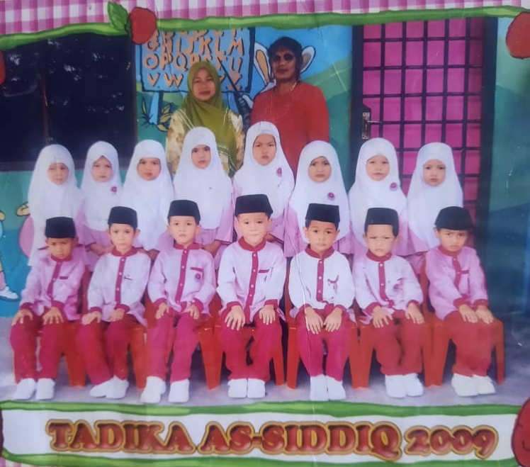

1 / 4
1 / 4
2 / 4

3 / 4
--KINDERGARTEN--
This me when I was 5 years old. I was studied at as siddiq kindergarten until I was 6 years old. I'm miss my kindergarten teacher.
--AGAMASCHOOL--
This me when I was 9 years old. I was studied at Sekolah Agama Bandar Seri Alam. I was I studied there from the age of 7 to 12 years old. I was really having fun to study in there and lot of things that I've been learned with my Ustadzah.
--MIDDLESCHOOL--
This me when I was 12 years old. I was studied at Sekolah Kebangsaan Bandar Seri Alam. I was I studied there from the age of 7 to 12 years old. I was really having fun to study in there and also I having a lot of friends when I'm in middle school.
--HIGHSCHOOL--
This me when I was 17 years old. I was studied at Sekolah Menengah Kebangsaan Bandar Seri Alam. I was I studied there from the age of 13 to 17 years old. I really doesn't like my highschool friends and also my teacher too because they're too toxic and make me sick everyday, everytime I go to school.